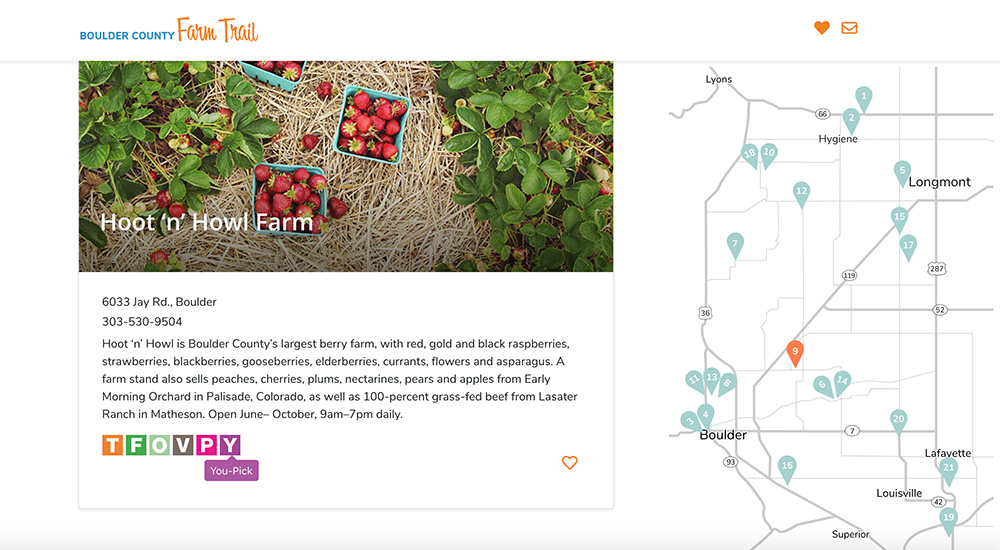
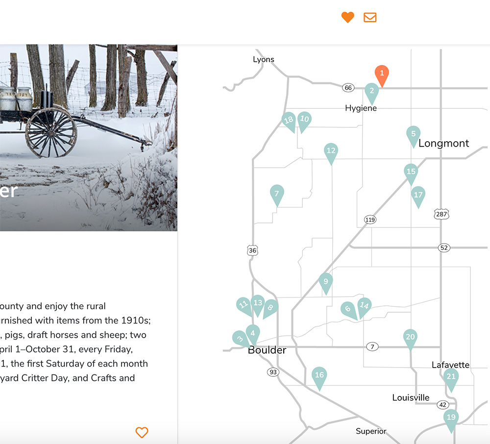

Technologies Used: HTML, CSS, JavaScript ES6, SVG, React, Node, Express, Knex, PostgreSQL, Adobe Illustrator
Background
I have always loved maps. I could spend hours exploring maps, atlases, even google maps. I especially love when maps are used online in interactive storytelling, adding an additional layer of understanding to information by
connecting that information to a place.
While a student at Galvanize, I became increasingly interested in all of the options to use code to make maps and other data visualizations, and began to explore various javascript libraries such as leaflet.js, d3.js, and also
animated svgs, so I knew that I wanted my final capstone project to have a map component.
I used to work for a local farm here in Colorado, and one idea I had was to make an interactive tour of farms in the area. In my research for this, I found that the Boulder Convention and Visitor’s Bureau had already created a
really amazing printed map of farms and farm activities in Boulder County. I contacted them to see if I could make an interactive version and they said yes.

As this was a solo project, I was responsible for the entire project from research, conception, design, wireframing, front and bavk-end development and deployment in a two week time frame.
Features
The main feature of this site is a scrollable listing of 21 area farms with a photo, location, description and contact info. At the bottom of most listings is a series of colored icons representing the different activities each
farm offers to visitors.

You can hover over these icons and see a popup of what they represent such as tours, workshops, farm dinners, and volunteer opportunities.

These farm listings are connected to the map on the right and as you scroll through the farms, you can see the corresponding map marker highlighted. You can also click on each marker to trigger a scroll to the corresponding farm.

The map is an SVG that I created in Adobe illustrator and the frontend is built with React. To integrate the map with the farm listings I took the code from the svg file and placed it inside a react component. This allowed the me
to add additional javascript to the svg code so that it could interact with other components and receive state.

The farms are populated by a Rest API I created for the backend using a postgreSQL database, Node.js, Express, and Knex.